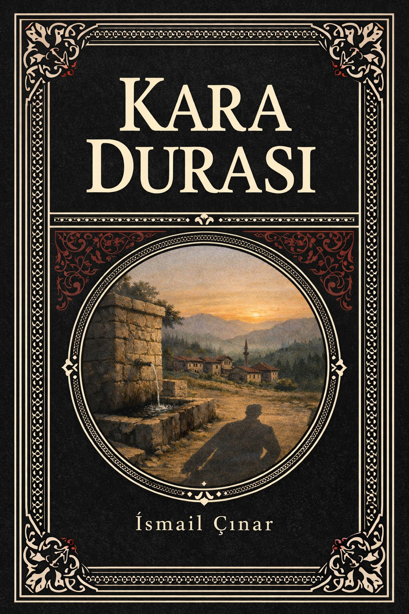

Kitap Hakkında

Yazar: İsmail Çınar
Yayın Tarihi: Şubat 2026
Editör: Naim Çınar
Kapak Tasarımı: Naim Çınar, Berna Görgülü
Lisans: Açık Erişim
Bu kitap, İsmail Çınar tarafından kaleme alınmış ve dijital ortamda erişilebilir hale getirilmiştir. Kitap, yazarın büyük dedesi Molla Mehmet ve dedesi Koca Hüseyin'den dinlediği gerçek olaylara dayanmaktadır. Eşkıya Kara Durası'nın hikayesi, 1900'lerin başı Anadolu'sunda geçen, gerçek olaylara dayalı bir kurgu romandır.
Online Okuma
İndirme
İletişim
Lisans: Açık Erişim - Kaynak gösterilmek kaydıyla paylaşılabilir. Detaylı Bilgi